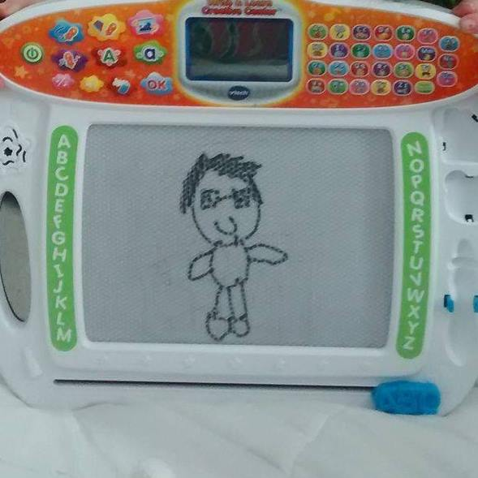

Thank you Mr. Wang!
It was definitely intimidating getting fully into computer science for the first time last year,
but thanks to your help I've enjoyed it and made all of this!
It's been a really fun two years having you for Intro to Computer Science, SQL, and a little bit of AP
Even when it wasn't so fun (like when I got sick both years right before labs/tests), you've helped make things easier and were so accomodating.
I've also learned from you in ways outside of your class, like using your web app tutorials for midyear this past year!
I cannot express how much it has helped to have a teacher like you as I got accustomed to life at BCA!
I'm sad to see you go and will miss you, but I appreciate you for helping me discover my passion for CS and always treating us with kindness!
Good luck with whatever you do next!
~Julia <3
A little musical sendoff: